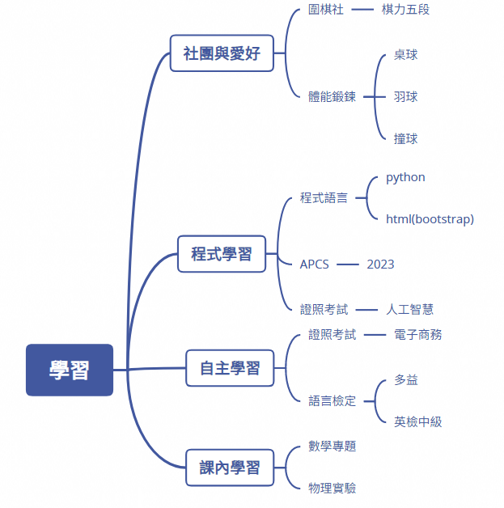
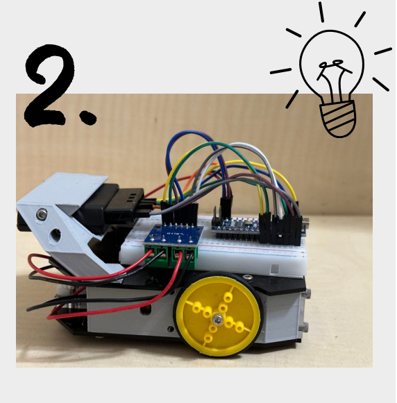

學習歷程
學習心智圖

Hello!!!我是睿紘
生活學習照片
榮譽的證明
AI證書、TQC-DK證書、圍棋力5段證書
學習心智圖
生活學習照片
AI證書、TQC-DK證書、圍棋力5段證書
由於資訊與通訊科技的進步，電子商務的應用已融入
我們日常生活，因此具備電子商務相關知識，對於想就
讀資訊相關科系的我是必須的，所以我於高三時通過
TQC電子商務概論實用級考試，順利取得證書。
所謂電子商務是透過網際網路進行商品和服務的交易。
它不僅限於傳統實體店面，還包括網路平台上的購買、銷售、以及其他
交易行為。透過電子商務，我們可以在電腦、手機等設備上購物，方便
又快速。不僅如此，電子商務也讓我們能夠更容易地比較價格、查詢商
品資訊，並且享有更多元的選擇，對於我們這些高中生來說，電子商務
不僅是購物的方式，更是一個了解商業運作、學習創新科技的機會。
電子商務的發展已經成為主流的商業模式，包括企業對消費者(B2C)
和企業對企業(B2B)，電子商務背後的運作方式，包括了許多資訊科
技，例如購物網站的架設，電子化付款流程等，這些都是我日後就讀資
訊系後必須具備的專業能力，我也相信自己有能力念好這些專業科目。
深知踏入大學後，英文能力除了會影響課業成績外，更是國際交流和
就業機會的關鍵，因此，提升自我的英文程度，是我努力的目標。但英語
一直是我學習上的困擾，所以我要克服這個障礙，因此我善用上下學通勤
時間在公車上聽英文雜誌來增進自身的英語聽力能力，更於學測前每日複
習英文，學測成績考得比模考成績高三級分，並通過全民英檢中級初試，
且將於4月12日參加全民英檢中級複試。
在準備考試過程中遇到不會的單字或片語就上網查翻譯，或者是問老
師，而不是抱著僥倖的心態認為它一定不會出現在考試裡就不管，這讓我
了解:「努力是會有結果的」，透過這個檢定，也讓我知道自己在英文的學
習程度，未來，我會持績加強自己的英文程度，提升自我競爭力，順利接
軌大學課程。
網頁是我學習python時，接觸到的HTML的技術，才知道利用html語言就可以寫網頁，後來在YOUTUBE上看到了簡單網頁的製作，覺得很有趣，就先跟著很多個YOUTUBE頻道學做網頁。
在學習過程中，遇到很多阻礙，因為能討教的人很少，只好都到youtube上找教學。偶然在教學頻道說到了W3School這個網站，加上網站上有提供很多可以實做的方法，覺得很有趣，所以常常會利用空閒的時候會翻看一下教學，並利用replit實做。但網頁的操作與自己想做出來的功能真的差很多，網頁的程式碼很多，而且都是對稱的，做出來的顏色與螢幕寬度也常讓我很頭痛，因為用來編寫網頁美觀的css語言，很難看的懂，所以網頁只會有空的時候才試著玩看看。
高三這年暑假，有聽到若是寫網頁要符合手機頁面，可以用響應式網頁，所以接觸到了bootstrap這個網頁程式；一開始用的時後搞不懂為什麼我的總是用不起來，後來才知道bootstrap需要匯入別人寫好的css與javascript樣板，利用了空檔時間問了懂網頁製作的老師，才正式寫bootstrap的網頁。
bootstrap很難操作，因為裡面用了很多div的框架框起來，div的框架都是對稱的，常常會一不小心沒處理好網頁就無法執行，甚至搞不懂為什麼會發生這種錯誤，常常寫的很沮喪，但因為課頁的壓力很重，無法花很多時間鑽研，土法煉鋼的方法，寫網頁的時後總會習慣保留很多版本，一遇到框架錯誤就會還原到上一版，再根據W3School上的教學來加入程式碼，經歷很多次的挫折才達成正確的網頁編排，但編排的網頁目前還是先跟著網站學習，之後想要找機會從頭再鑽研，讓網頁能呈現更多動畫或是功能。
ChtGPT的興起引起了我對人工智慧(AI)的好奇，所以我在學測後自我充實人工智慧相關知識，並在高三時順利通過人工智慧應用與技術實用級Primary考試，取得證書。
在準備考試的過程中，我了解造成現今人工智慧蓬發展旳原因之一為機器學習的興起，透過物聯網及雲端服務的普及，可以收集到大量的資料來訓練模型，讓機器能夠像人類一樣學習、理解、推理和執行任務。
對於我們高中生來說，AI不僅是科幻電影中的概念，它已經融入我們日常生活。舉例來說，AI可以協助我們在網路上搜尋資訊、辨識圖片中的物體、個性化推薦音樂和影片，甚至是自動駕駛汽車。透過學習AI的基本原理，我們能更好地理解這個科技趨勢，並為未來的職涯做好準備。
高二時，為了多了解有關資訊的世界，我參加淡江大學機器人研究社舉辦之寒假高中營隊，在營隊的四天，我學到了很多東西，也獲得難忘的回憶。
營隊課程有Ｃ語、Arduino、深度學習及雷射切割，首先我透過繪圖軟體設計出電動汽車的平面圖及電路圖，並透過Arduino及Ｃ語言設計來控制電動汽車，且利用雷射切割，切割出車牌，經過一番努力，打造了我自己設計第一輛會動的車子，我覺得很有成就感。
這次營隊中我接觸了簡略的大學課程及高中沒有機會學到的實作，觸發了我對資 訊 的興 趣 ， 當我回家用 LeeLa 人工智慧圍棋軟體覆盤時，我開始思考這個軟體如何撰寫的，AI 的圍棋知識是如何得到的，更加深我探索資訊領域的決心

圍棋是我從小學二年級就開始學的才
藝,當初是受到哥哥的啟發,那時候的我還
不知道圍棋是什麼，但看著哥哥每天回家
打譜和社區的小朋友下棋，我也漸漸的對
圍棋提起興趣。於是我也跟媽媽說:「我
也要學棋。」
在學棋之前我很調皮，總是坐不住，但隨著接觸圍棋的
時間越來越久，而圍棋比賽又是一個需要高集中度，時間很
長的比賽，只要一個恍神或是沒注意到對手下哪裡，就很有
可能輸掉一場比賽，因此我的個性也變得越來越冷靜，專注
度也提高許多。
又因為下棋要不斷思考，推測對手下一步要下那裡和各
種變化，而這些只能透過腦袋中進行，這也導致我比較擅長
邏輯思考。
下圍棋是很考驗一個人的耐心跟定力，一盤棋常常超過
一個小時，而且在下棋的過程中往往是獨自奮戰，全身心投
入到那盤棋當中，到了段位後，一天比賽往往都需要下五到
六盤、常常要從早上下到傍晚。如果體力不濟的話，很有可
能在緊要關頭出現失誤。
對我來說一整天都在比圍棋是一種常態，我可以一整天
都專注在一件事上，圍棋帶給我許多改變，也改變我的性
格，它已然成為我生活中的一部份。